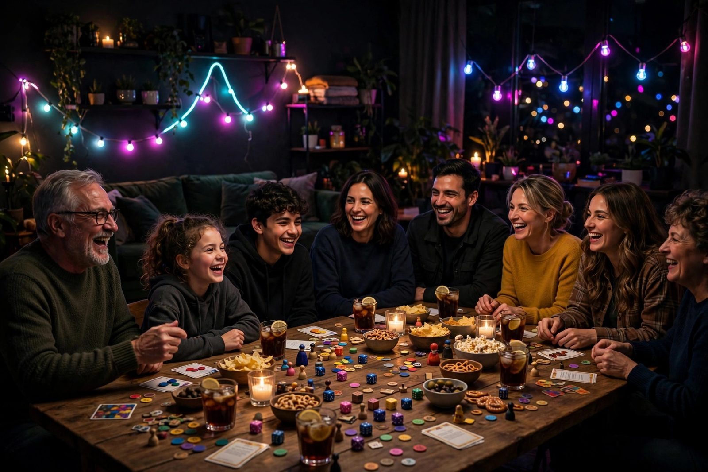

Games for crowds and family gatherings

Thanksgiving dinner is over. There are fourteen people in the living room, ages range from eight to eighty, and someone suggests "let's play a game." If you pick wrong, you get two people playing while twelve watch. Pick right, and you get the loudest, funniest hour of the holiday — the part everyone talks about on the drive home. Big-group games have different rules than living-room games, and this guide is about those rules.
The three laws of big-group games
Any game that works for ten-plus people almost always follows these:
- No elimination. When twelve people play, knocking players out leaves a growing audience of bored spectators. Either nobody gets eliminated, or eliminated players rejoin within minutes. The game ends for everyone at the same time.
- Everyone does something every minute. Attention is the scarce resource. Guessing games, team formats, and simultaneous play keep fourteen brains busy. Anything with long turns and waiting is dead on arrival for a crowd.
- Teams are your best friend. Fourteen individuals is chaos. Three or four teams is manageable — and teams solve the mixed-ability problem automatically, because each team can include a mix of ages and skills. Nobody carries the game alone, and nobody sits out.
Team formats that just work
Charades, team-style. Split into teams, one actor from each team takes turns, and only their team guesses. It's louder, faster, and funnier than the free-for-all version because teams can strategize ("she's good at acting, let her go twice"). Keep turns to two minutes with a timer.
Family feud, homemade. You don't need the TV show's survey data — just write your own questions ahead of time ("Name something people forget when packing for vacation") and have the family guess the top answers you've decided. One person plays host. Teams take turns guessing. It's a guaranteed hit because the answers are your family's own quirks.
Trivia in teams. Straight trivia favors the adults, but team-based trivia with a mix of questions — one round of sports, one round of "name the cartoon character," one round of family-history questions — lets every generation contribute. Have someone neutral read the questions and keep score.
No-equipment crowd pleasers
The best gathering games need nothing you don't already own, because someone always forgets to bring the board game:
- Wink murder. Everyone sits in a circle; secretly pick one "murderer" (a slip of paper works). The murderer "kills" players by winking at them. If someone thinks they know who it is, they accuse — right accusation wins the round, wrong accusation eliminates them. Scales perfectly: ten or twenty players, same rules, same hilarity.
- Two truths and a lie. Each person states three things about themselves; two true, one false; the group guesses the lie. It's a game and a conversation starter — cousins who haven't seen each other in years suddenly have stories to tell.
- Telephone / story chain. Whisper a phrase around the circle and compare the first version to the last. It's silly at eight and somehow funnier at eighty.
- Scavenger bingo. Hand everyone a bingo card of household items ("something older than grandpa," "something that makes noise") and race to collect or photograph them. Perfect for restless kids at a big gathering.
Running the show
With a big group, someone has to be in charge — and it's easiest when it's not the host cooking dinner. Volunteer as the emcee: explain rules once, loudly, keep rounds moving, and call breaks. Set a clear endpoint ("we'll play until 8, then dessert") so the game ends on energy rather than attrition. And seat people deliberately: mix the generations at the table instead of letting the kids cluster at one end. The eight-year-old shrieking with laughter next to grandpa is the picture you'll want later.
One caution: the sore-loser spiral
Big groups multiply drama. One competitive uncle trash-talking can sour the room faster than any bad game choice. Set the tone early with a stated house rule: we're playing for laughs, not for keeps. Pick a silly prize — the winner gets to pick the movie, or wears the turkey hat. When the stakes are deliberately ridiculous, losing stings less and the night stays fun. (More on house rules in our scorekeeping guide.)